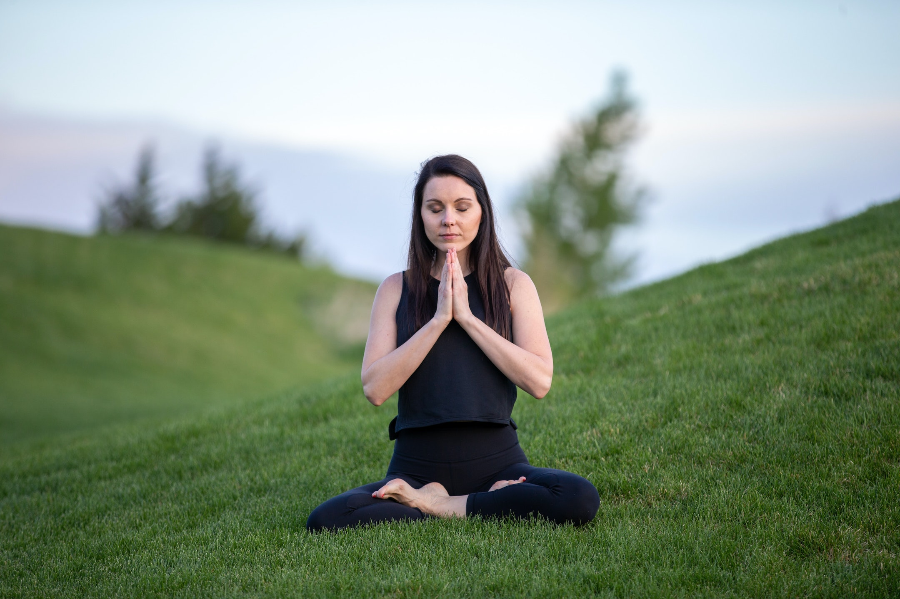
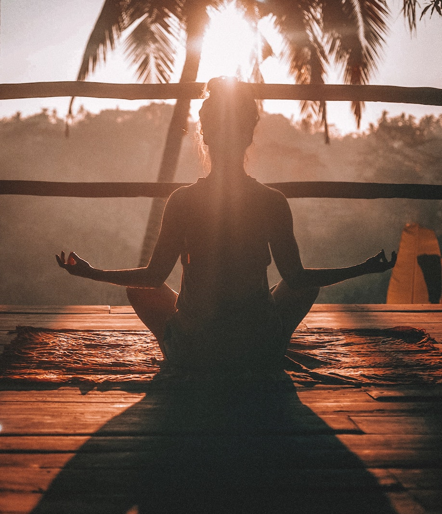

Meditation boosts productivity
Meditation has long been known to have a calming effect on the mind and body, but a new study suggests that it can also boost productivity in the workplace. Researchers found that employees who practiced daily meditation reported improved focus and concentration, as well as a reduction in stress and burnout.
Olivia Stone
February 22, 2023
Yoga for stress reduction
Stress can take a toll on both our mental and physical health, but yoga offers a simple and effective way to reduce it. These five easy yoga poses, when practiced regularly, can help calm the mind and reduce tension in the body, leaving you feeling more relaxed and focused.
Brandon Mitchell
January 19, 2023
Nature walks improve mental health
Nature has a powerful effect on our mental well-being, and taking a nature walk is a great way to tap into that power. Research has shown that spending time in nature can reduce stress, improve mood, and boost cognitive function, making it a simple yet effective tool for maintaining good mental health.
Emily Parker
January 8, 2023
Mindfulness for better sleep
Getting a good night's sleep is essential for both our physical and mental health, but it can be hard to come by in today's fast-paced world. Mindfulness practices, such as deep breathing and visualization, can help quiet the mind and reduce stress, making it easier to fall asleep and stay asleep.
Ryan Scott
December 29, 2022
Gratitude improves well-being
Gratitude has been shown to have a positive impact on mental health, and incorporating a gratitude practice into your daily routine can improve your overall well-being. Whether it's through journaling, sharing with loved ones, or simply taking a moment to appreciate what you have, a gratitude practice can help shift your focus to the good in your life.
Sarah Johnson
December 20, 2022

Mindfulness reduces stress
Stress is an inevitable part of life, but mindfulness practices can help us manage it more effectively. By paying attention to the present moment and focusing on our breath, we can reduce stress, improve our mood, and increase our overall sense of well-being.
David Garcia
November 5, 2022
Self-care in the digital age
In the age of digital overload, it's more important than ever to prioritize self-care. Mindfulness practices, such as meditation and yoga, can help us disconnect from the constant stimulation of technology and find inner peace, improving our mental and physical health.
Lauren Williams
October 25, 2022
Beginner's guide to meditation
Mindfulness practices, such as meditation, can seem daunting for beginners, but they don't have to be. With this beginner's guide, you'll learn the basics of meditation, including how to sit, breathe, and focus your mind, making it easy to get started on your own mindfulness journey.
Michael Anderson
October 15, 2022
Mindfulness key to inner peace
Mindfulness is the key to living a stress-free life, and incorporating mindfulness practices into your daily routine can help you manage stress and improve your overall well-being. Whether it's through meditation, yoga, or nature walks, mindfulness can help you find inner peace and improve your mental and physical health.
Nicole Thompson
September 3, 2022

Digital overload and self-care
Meditation can seem intimidating for beginners, but it is a simple and effective way to quiet the mind and find inner peace. With this beginner's guide, you'll learn the basics of meditation, including how to sit, breathe, and focus your mind, making it easy to get started on your own mindfulness journey.
Jacob Martinez
September 1, 2022